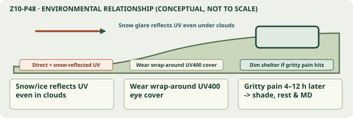

Z10-P48 · Wilderness medicine · New manuscript
Prevent snow blindness (UV photokeratitis) and protect irritated eyes
Shield corneas from intense snow and water UV glare and manage painful delayed snow blindness safely.
When it applies · Bright snowfields, frozen lakes, glaciers, high elevations, and overcast bright snow glare.
Equipment · Wrap-around UV400 sunglasses or glacier goggles, spare sunglasses or improvised narrow-slit glare shield, and cool clean damp cloth.

Actions
- Wear wrap-around UV-blocking sunglasses or goggles continuously on snow, ice, and open water—even on hazy overcast days, because snow reflects intense ultraviolet radiation upward into unprotected eyes.[X10, M18]
- Recognize delayed snow-blindness symptoms appearing 4 to 12 hours after exposure: severe gritty burning pain, tearing, swollen lids, headache, and extreme light sensitivity that can leave a traveler temporarily unable to open their eyes.[M18, X10]
- Move into dim shelter, remove contact lenses gently, rest with eyes closed under a cool clean damp cloth, do NOT rub the eyes, and arrange guided exit and clinical eye evaluation if severe pain or vision loss persists.[M18]
Failure recognition · Hiking across a bright white lake on a cloudy March afternoon without sunglasses because the sun is behind thin clouds.[X10, M18]
Verify · Confirm UV eyewear is worn before stepping onto snow/ice/water and spare eye protection is accessible.[X10, ED]
Stop or change course · Severe light pain, tearing, or impaired vision halts solo or hazardous travel immediately until guided out to safe shelter and medical review.[M18]
Evidence and editorial notes
- M18 · NIH / MedlinePlus · Eye Injuries (current web edition)
- Section: Eye Injuries, Flushing, and Penetrating Trauma Limits · Conditions: Dust/chemical splash vs blunt or penetrating eye trauma
Support: Flush chemical splashes or loose surface grit gently with clean potable water or sterile saline; never rub the eye, never remove an embedded object, shield without pressure, and seek urgent eye care.
Limitations: Forcing open swollen eyelids or pulling embedded debris causes irreversible vision loss. · Conflicting evidence: None; separates surface irrigation from penetrating-eye shield protection.
Editorial note: Core eye-trauma decision boundary in Z10. · Specialist reviewer: Ophthalmology and emergency medicine
Primary source · checked 2026-11-24 - X10 · NPS · Rocky Mountain Safety (High-Elevation and Mountain Travel) (current web edition)
- Section: Rocky Mountain Safety > Afternoon Lightning, Rapid Cooling and Steep Terrain · Conditions: High-elevation ridges, alpine passes and mountain weather
Support: Mountain temperatures drop sharply with elevation and sunset, afternoon thunderstorms build rapidly over exposed ridges (requiring early starts and turning back below treeline), and steep snowfields conceal runout hazards.
Limitations: Clear morning skies routinely shift to severe lightning and sleet by early afternoon. · Conflicting evidence: None; integrates with E07, E23 and CDC-ALT.
Editorial note: Grounds mountain timing, treeline retreat and elevation-cooling cards. · Specialist reviewer: Mountain safety and meteorology
Primary source · checked 2026-11-24
Source lineage · NIH MedlinePlus Eye Injuries and NPS Mountain Safety; new manuscript · Classification · New manuscript.